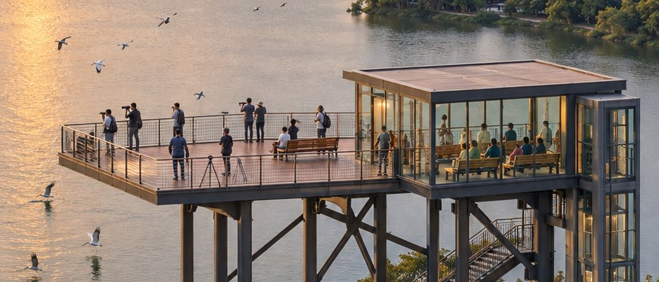
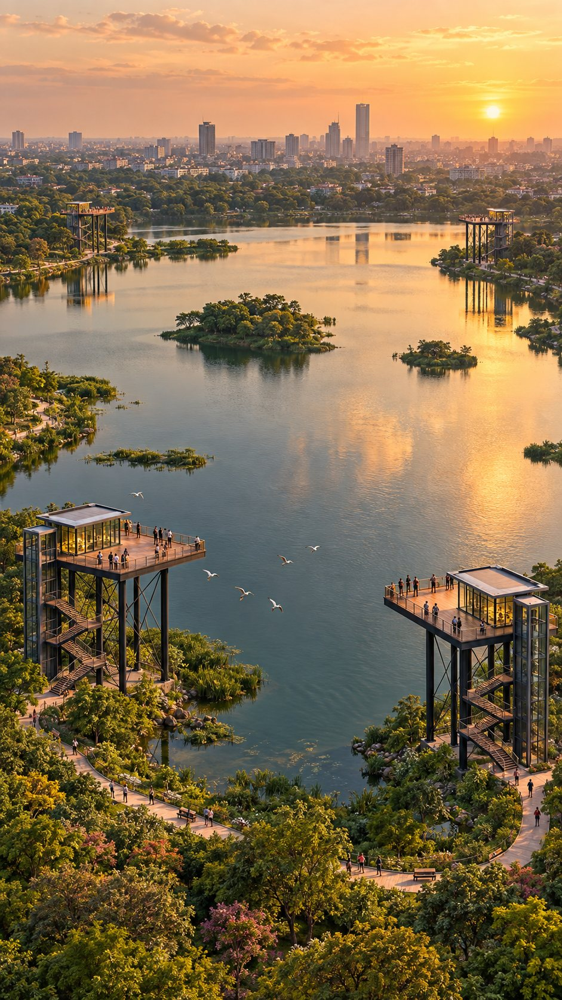
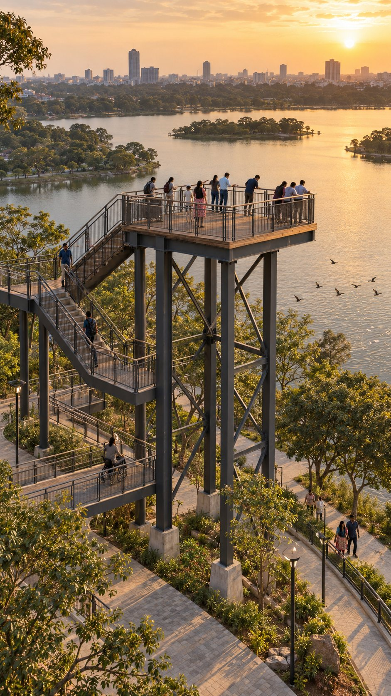
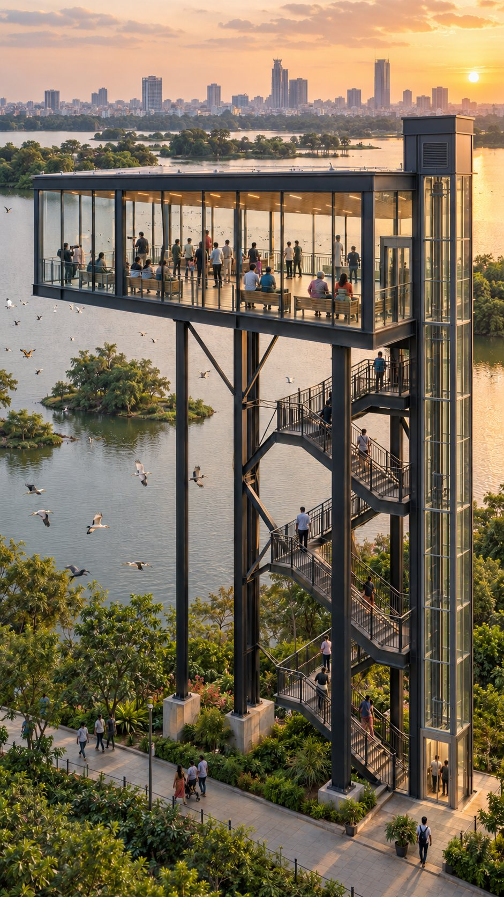
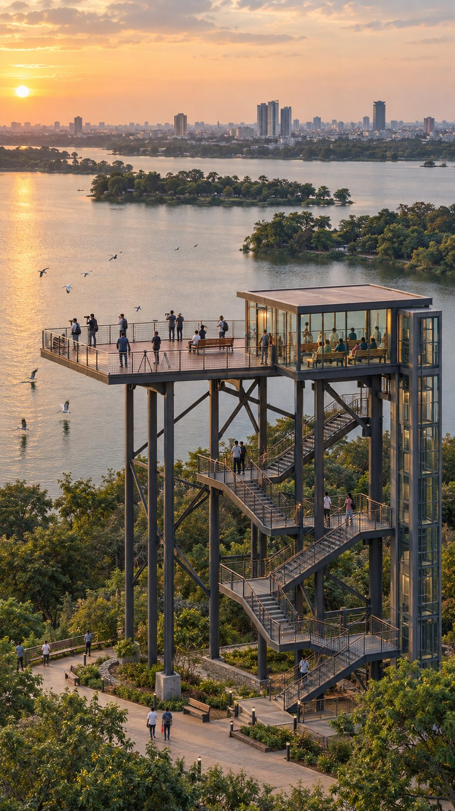
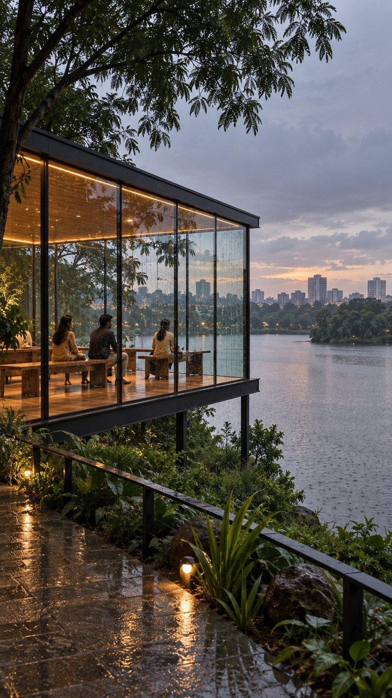

"Two ways to watch the same lake. Nobody has to choose."
Bangalore is a city of lakes. Migratory birds. Morning mist. Sunsets over the water. Some of the most beautiful public places in the city are sitting right inside it.
But most of us only see them from a broken footpath, or through a fence. A jogging track at water level, a gap between two trees, a wall with the lake somewhere behind it. We live beside these lakes and almost never really see them.
"What if every lake had a place to truly see it from? Raised high. Looking down over the water, the birds, the whole horizon."
Build a raised viewing structure at every major lake — above the treeline, set back from the water's edge, looking down over the open water, the islands, the birds, and the horizon beyond. Not a tourist gimmick. A public place for the city to stand and look at what it already has.
And build it so that it works for everyone, in every kind of weather. Which means not one deck, but two.


For the birdwatcher, the photographer, and anyone who wants the wind, the sound of the water and an unobstructed view. Railings, room for a tripod, nothing between you and the lake.

Covered, shaded and seated — for the rainy evening, the harsh afternoon, and the grandparents who just want to sit and watch. Same view, with a roof and a bench.

"Two ways to watch the same lake. Nobody has to choose."
Site every deck where the view is widest and the disturbance is lowest — set back from nesting islands, reed beds and roosting trees. Local birders and the forest department sign off on the location before anything is drawn.
The whole point is height. A deck at canopy level sees the entire lake, the islands and the horizon — something no lakeside path at water level can offer.
An open deck for the breeze and the camera, and a glass-covered deck for shade, rain and seating — on one shared structure, so it costs one foundation, one stair and one lift.
A lift and a ramp, not just stairs. If a grandparent or a wheelchair user can't get to the top, it isn't a public viewing deck — it's a fitness challenge.
Patterned, bird-safe glass so it reads as a solid surface in flight. Warm, low lighting pointed at the deck, never at the water. Light-steel frames that sit lightly on the ground and leave the shoreline vegetation alone.
Opening hours, a capacity per deck, cleaning and upkeep paid for by the lakefront itself — not left to decay after the inauguration. How the whole lakefront pays for itself is Part 2.
One pilot structure, one lake. Count the visitors, ask the birders, measure the upkeep. Then repeat it lake by lake on evidence.
| Factor | Today | With viewing decks |
|---|---|---|
| How you see the lake | From a footpath, through a fence | From above — the whole water and horizon |
| Birdwatching & photography | Snatched from the edge, at water level | An open deck built for it |
| Rain, heat, harsh afternoons | You go home | Sit in the glass deck and keep watching |
| Elderly & wheelchair users | Uneven paths, no seating | Lift, ramp and benches at the top |
| Disturbance to birds | People pushing to the edge for a view | One sited point, set back from nesting areas |
| Reason to visit the lake | A walk, if the path is in shape | A destination the neighbourhood is proud of |
Every lake gets a place to truly see it from
Birdwatchers and photographers get a proper vantage point
The lake stays usable in rain, heat and the harsh afternoon
Grandparents and wheelchair users reach the same view as everyone
Crowds gather at one sited point, not all along the fragile edge
A lake people visit is a lake people defend
Monsoon is when Bangalore's lakes fill, the light goes soft and the water comes alive. It is also when every open lakeside path empties out. The glass deck turns the best weather to watch a lake into the time people actually stay.

A three-storey tower built for one purpose: an unobstructed view over the marshes, where visitors watch birds of prey like the White-bellied Sea Eagle without walking into the habitat.
The wetland reserve pairs the Aerie Tower, a lookout for migratory birds, with covered observation hides at ground level. Open and sheltered ways to watch, in one place — the same logic as two decks.
A seven-deck tower in a reservoir park, giving a bird's-eye view across the Central Catchment forest. A city water body treated as somewhere worth climbing up to see.
Looked after by a neighbourhood trust, the lake has recorded more than 80 bird species. The birds are already here, in our own lakes. What's missing is a place for the city to see them from.
It will, if it is put in the wrong place. That is why siting comes first and birders decide it — set back from nesting islands and roosts, bird-safe glass, no lighting on the water. Done right, one fixed viewing point actually reduces disturbance compared with people pushing to the water's edge all along the shore.
Clean water comes first, and this is not a substitute for it. But a viewing deck has a small footprint and a modest cost next to a lake rejuvenation project — and a lake that thousands of people come to look at is a lake whose pollution can no longer be quietly ignored.
This is the real risk, and it's the failure pattern of almost every rejuvenated lake in the city. Which is why the decks only make sense inside a managed lakefront — hours, capacity, upkeep and revenue that stays with the lake. That is Part 2.
"An open deck — for the birdwatcher, the photographer, anyone who wants the breeze exactly as it is. And a glass-covered deck beside it — for the rainy evening, the harsh afternoon, the grandparents who just want to sit and watch."
These are ideas, not answers. The best version of any idea comes from debate. Which lake should get the first one? Tell us in the comments.